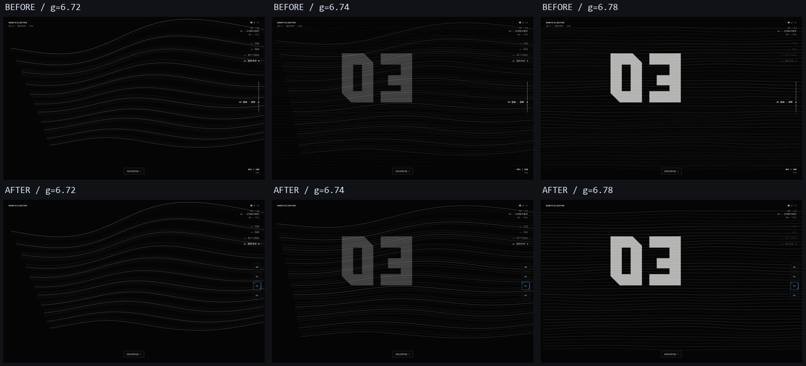
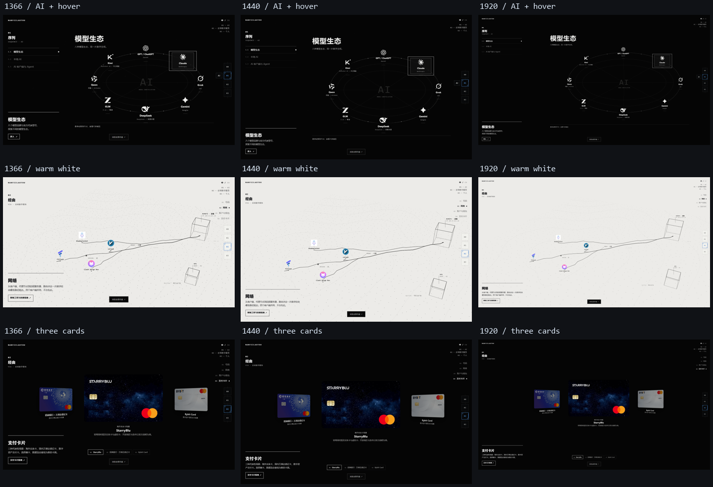

V0.1.1 · 正式根入口 UI 回归
基线 7b7e53b。截图来自同一实际 GPU、固定进度和时间。仅截图测试暂停 CSS 过渡以比较稳定帧；鼠标显色、导航、返回动画另行真实播放验证。首页粒子、品牌坐标、时间轴和卡片算法保持原样。
首页 · 线上首页 · 完整报告 · 线上实测与发布记录
之前 · V0.1.0 / 1440×900 之后 · V0.1.1 / 1440×900
之后 · V0.1.1 / 1440×900
02→03 接缝
上排之前，下排之后。原先过早出现的完整 Personal 线场与仍在扩展的 Global 线场重叠；现在复制当帧 Global 线场作底层，再进入原 Personal。两边几何和相位不再争夺画面。

三种桌面尺寸与交互

右侧导航默认仅显示四个编号和当前章节细进度线；悬停或键盘聚焦展开名称。手机隐藏新轨道，原顶部导航保留。快捷返回实测约 327.5ms，先遮罩，再原子复位并重播原 Opening，未创建新 Shader。
导航 / 纸面覆盖率 · 保护画面比较 · 接缝之前实测 · 接缝之后实测 · 快速返回 · 完整功能 · DPR2 / 后备 · Opus 原型对照